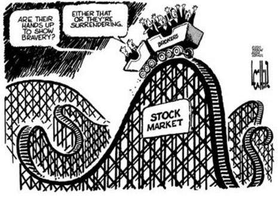

In 1928, there was another expansion bringing the total number of companies included in the index to thirty.
- Allied Chemical and Dye Corporation
- General Railway Signal Company
- Sears Roebuck & Company
- American Can
- B.F. Goodrich Corporation
- Standard Oil Co. of New Jersey
- American Smelting & Refining Company
- International Harvester Company
- The Texas Company
- The American Sugar Refining Company
- International Nickel Company, Ltd.
- Texas Gulf Sulphur Company
- American Tobacco Company (B shares)
- Mack Trucks, Inc.
- Union Carbide Corporation
- Atlantic Refining Company
- Nash Motors Company
- United States Steel Corporation
- Bethlehem Steel Corporation
- North American Company
- Victor Talking Machine Company
- Chrysler Corporation
- Paramount Publix Corporation
- Westinghouse Electric Corporation
- General Electric Company
- Postum Incorporated
- F. W. Woolworth Company
- General Motors Corporation
- Radio Corporation of America
- Wright Aeronautical

https://www.newyorker.com/cartoons/daily-cartoon/wednesday-february-7th-dow-jones